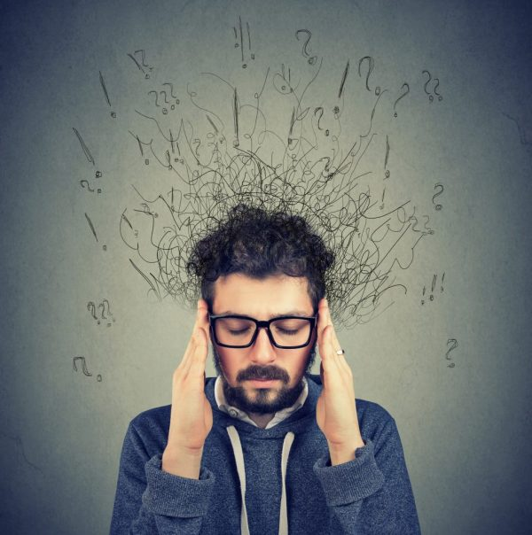

Over the years, while being used for other applications, physicians noted the secondary soothing effect of Ketamine for anxiety.
While low dose IV Ketamine infusions are best known for the treatment of refractory depression, they may also help short-term anxiety.
The study’s results concluded that Ketamine was safe, well-tolerated, has potential as an anti-anxiety pharmacologic candidate.
“Recent data suggest that Ketamine, given intravenously, might be the most important breakthrough in antidepressant treatment in decades.”
-Thomas Insel, Director National Institute of Mental Health (2002–2015)
Over the years, while being used for other applications, physicians noted the secondary soothing effect of Ketamine for anxiety. While low dose IV Ketamine infusions are best known for the treatment of refractory depression, they may also help short-term anxiety.
A study from 2017, looked at the effect of Ketamine treatment on patients with GAD (generalized anxiety disorder) and SAD (social anxiety disorder), who weren’t currently depressed, but were also not responding to the standard anti-anxiety medications. Because anxiety and depression are marked by related changes in the brain, and Ketamine affects them positively, depressive symptoms may also subside during treatment for anxiety.
The study’s results concluded that Ketamine was safe, well-tolerated, has potential as an anti-anxiety pharmacologic candidate.
“Recent data suggest that Ketamine, given intravenously, might be the most important breakthrough in antidepressant treatment in decades.”
-Thomas Insel, Director National Institute of Mental Health (2002–2015)
Manifestations of anxiety are diverse. People can experience all or none of the below while still suffering terribly on the inside. Their symptoms may be mild or severe, acute or chronic, depending on the type of anxiety.
Panic Disorder: Panic events of extreme anxiety accompanied by other symptoms like shortness of breath, sweating, trembling, and derealization.
Phobia: Excessive fear of particular objects, activities, or situations.
Social Anxiety Disorder: Deep discomfort with socializing. Maybe a fear of being judged or criticized by other people in social circumstances.
Obsessive-Compulsive Disorder: Recurring cycles of highly disturbing obsessional thoughts requiring a compulsive response; one of which is the stereotypical non-stop hand-washing ritual.
Separation Anxiety Disorder: Dread of distance, detachment, or death of loved ones.
Illness Anxiety Disorder: Also known as hypochondria: obsessive concern about one’s health
Post-Traumatic Stress Disorder (PTSD): A persistent state of traumatic reaction following exceptionally painful, often life-changing, events.
Individuals burdened with anxiety disorders can suffer extreme nervousness interfering with even simple daily responsibilities. Chronic, high levels of stress can keep patients from doing things they love, staying productive, and carrying out basic activities. Intense anxiety wears on the body and the mind, often bringing comorbid depression.
When any of these conditions do not remit, they can cause lifelong problems. Anxiety disorders can cause long-term disabilities affecting learning, social interaction, productivity, financial security, and other health complications undergirding a stable life. Patients with a formally diagnosed anxiety disorder have a higher risk of suicide. Suicide driven by mental health issues, including anxiety, is a critical health problem.
People in this state require extra patience and consideration. Their quality of life is deficient during these episodes. And their ability to control themselves, or assess and adjust their behavior, may be severely impaired.
Treating suicidal patients requires immediate intervention. Once someone has decided to act, they need rescuing from that dark pit immediately. Psychiatric medications may help in the long term. But, suicidal impulses are dangerous immediately.
“Suicidal, depressed patients need treatments that are rapidly effective in reducing suicidal thoughts when they are at highest risk. Currently, there is no such treatment for rapid relief of suicidal thoughts in depressed patients.”
-Dr. Michael Grunebaum – Columbia University Medical Center.
Unfortunately, it remains infrequent that potential suicidal patients are offered IV Ketamine treatments.
As with most behavioral health diagnoses, the most successful outcomes combine psychotherapeutic and psychopharmacological treatments.
Cognitive Behavior Therapy (CBT) is most often used to correct cognitive distortions that exacerbate anxious thoughts.
Dialectical Behavior Therapy (DBT) is now also being used to instill forward-looking coping skills.
Standard pharmaceutical treatments include neurotransmitter reuptake inhibitors such as Prozac, Paxil, and Lexapro. Atypical antipsychotics such as Zyprexa may be augmenting agents. Other groups of drugs that work through different mechanisms are benzodiazepines (Xanax, valium) and beta-blockers (propranolol). Other agents might be tried in recalcitrant cases.
As with every treatment modality, its outcomes vary by individual and are highly correlated with consistent compliance.
Properly administered Ketamine treatments are generally considered safe. Even the much higher doses used in surgery and pain relief enjoy a decades-long safety record. Low-dose IV Ketamine employs a fraction of that dose. And, using the intravenous route allows for precise dose control.
Ketamine has side effects. Most are mild and transient leading many patients and their physicians to decide the benefits outweigh the risks. However, the depth and duration of the effects can vary from person to person, creating different psychological experiences.
In cases of potential suicidality, a single dose of Ketamine can be enough to quell these crises rapidly with relative safety.
Prolonged use of Ketamine to manage mental illness may affect other system functions. It is metabolized in the liver and excreted through the kidneys. High doses (usually much higher than those used in the IV Ketamine treatments under discussion) can damage these two vital organs. The bladder can also suffer injury from chronic, high dose intake.
One stand-out benefit versus other psychiatric medications is, even when prescribed long-term, there is no evidence of complications of other augmenting agents such as antipsychotics, which can cause significant, irreversible injuries such as tardive dyskinesia or metabolic disorders like diabetes.
Possible side effects for the average IV Ketamine patient:
Nausea or vomiting
Blurry vision
Disorientation
Perceptual disturbances (time seems to slow down or speed up)
Dissociation (“out-of-body experiences” and hallucinations)
K-holes (Ketamine holes – dissociative experiences characterized by intense anxiety, panic, loss of conceptual identity)
Ketamine is known to increase blood pressure and heart rate. Individuals with cardiovascular weakness may be denied therapy.
Similarly, people suffering from particular mental health impediments (i.e. schizophrenia or psychotic episodes) may be excluded.
In any case, mixing Ketamine with other drugs like alcohol, benzodiazepines (Valium, Klonopin) or opiates can produce dramatically negative effects. All concurrent substances or medications must be cleared by your physician.
The most immediate concerns of IV Ketamine treatment are hemodynamic and respiratory.
This medication can cause an acute escalation of blood pressure or other cardiovascular abnormalities. During treatments, patients are observed concerning their blood pressure, blood oxygenation level, and pulse.
In every case, each patient receives close monitoring to ensure detection and intervention in the case of a rare, severe reaction.
Patients are restricted from driving for the rest of the day.
Ketamine, like any drug, is susceptible to abuse. Ketamine’s popularity on the “underground dance scene”, with the alias “Special K”, nearly ruined the open-minded approach seen today in the medical community. Still, outside of prescribed medical use, it is not only illegal but can be highly dangerous.
John Abenstein, President of the American Society of Anesthesiologists, commented, “Outside of the clinic, Ketamine can cause tragedies, but in the right hands, it is a miracle.”
Recreational Ketamine abuse can injure the cardiovascular, cognitive, respiratory, reproductive, genitourinary, and immune systems. Abuse can also lead to urinary bladder dysfunction and impairment of the renal system, causing cystitis.
Keep in mind that the infrequent, supervised, low-dose nature of prescribed therapeutic applications makes abuse difficult.
As is the case with most drug abuse, the initial experiences may produce relaxation or euphoria. But, when taken too frequently or in excessive amounts, k-holes and the inability to safely interact within one’s surroundings may result. That’s why IV Ketamine therapy is performed in a controlled, medical environment with knowledgeable staff.
For the recreational user, breaking an addiction to Ketamine may not be easy. Recreational abusers can be plagued by cravings, shaking, tremors, hallucination, heavy sweating, and other dramatic reactions not unlike heroin withdrawal.
For all of these reasons, the patient’s history of addiction factors into the wisdom of a Ketamine prescription. Patients with extant or prior addictions may not be good candidates.
As the body of Ketamine treatment experience grows, our knowledge of refining dosing, employing safe, effective protocols, and minimizing chances of dependency, will all increase.
Ketamine carries some risk of interactions with other drugs. Concerning psychiatric implementations, monoaminergic antidepressants and MAO-inhibitors appear to be safe.
However, Ketamine’s efficacy may be reduced by benzodiazepines, such as diazepam.
Preferably, benzodiazepine intake is titrated down prior to Ketamine administration. Lamictal may also blunt Ketamine’s therapeutic effects. Your physician will manage these issues. The good news is that in many cases, patients on multiple medications can still receive therapy.